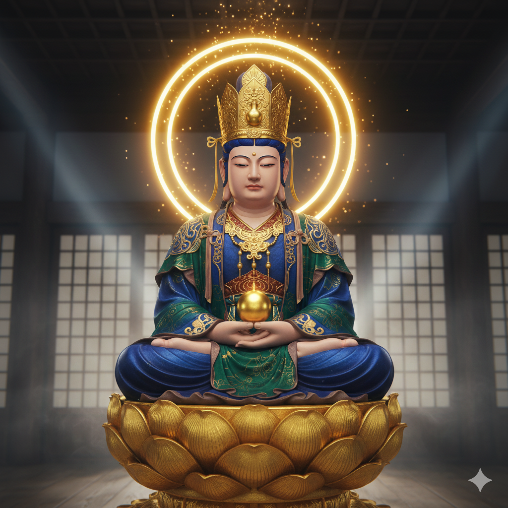

あなたの
守り本尊は
勢至菩薩です

どんな仏様？
午（うま）年生まれの守り本尊である勢至菩薩（せいしぼさつ）は、観音菩薩とともに阿弥陀如来の脇侍として仕える菩薩です。智慧の光をもって一切を照らし、人々を迷いから救い、極楽浄土へと導く力を持っています。
「勢至」の名は、その智慧の光が広大無辺で、人々を救う力が並外れて優れていることに由来します。頭にかぶっている宝冠には、人々の願いを叶える智慧の水が入っている水瓶（すいびょう）がついています。
ご利益
智慧の光で迷いを断ち、正しい道へ進むご利益があります。特に浄土宗・浄土真宗で阿弥陀如来とともに重要視されています。
- 智慧明瞭: 迷いや煩悩を払い、物事を冷静に見極める智慧を授ける。
- 衆生済度: 救済の力で、地獄や餓鬼などの三悪道から人々を救い出す。
- 開運招福: 智慧によって正しい選択ができるようになり、幸運を呼び込む。
祀られている主な寺院
- 善光寺（長野県） - 日本最古の仏像とされる一光三尊阿弥陀如来（阿弥陀如来、観音菩薩、勢至菩薩）が祀られています。
- 知恩院（京都府） - 浄土宗の総本山。勢至堂には法然上人の本地身とされる勢至菩薩像が安置されており、重要文化財に指定されています。
- 富貴寺（大分県） - 日本最古の木造建築である国宝の富貴寺大堂に阿弥陀三尊像（阿弥陀如来、観音菩薩、勢至菩薩）が祀られています。
- 臼杵石仏（大分県） - 自然の岩壁に彫られた磨崖仏の「ホキ石仏」に、阿弥陀三尊像が彫られています。
ご真言
おん さんざんざん さく そわか
何か困ったことがあるときや、心が落ち着かないとき、智慧の光で心が満たされ、迷いがなくなるよう願いながら唱えましょう。
合掌し、心を込めて唱えることで、多くのご利益を授けてくれることでしょう。
トップページへ戻る